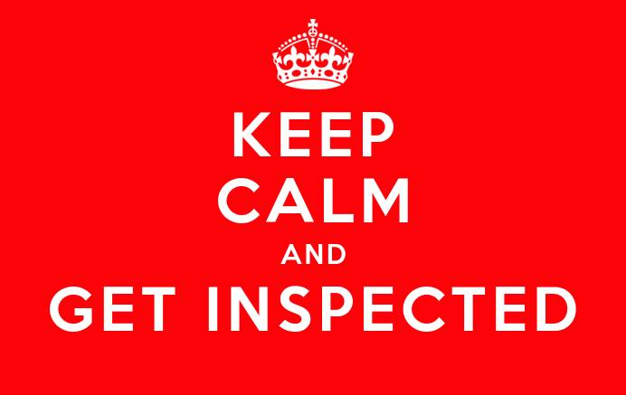

Yay!! I knew you’d find this page.
There are hidden links to three articles that will tell you what you need to know.
Seriously though…if I don’t start getting some recognition for what I contribute at work, I might have to Att@ck first. By the time this Empire strikes back, it’ll be too late.
I just hope I don’t get the aax after next week.
https://hackread.com/hackers-used-karma-tool-to-hack-iphones-of-govt-officials/By the way, I got a fortune cookie today.
The page inside read...
"If you want good karma, always check the source"
https://hackread.com/hackers-used-karma-tool-to-hack-iphones-of-govt-officials/